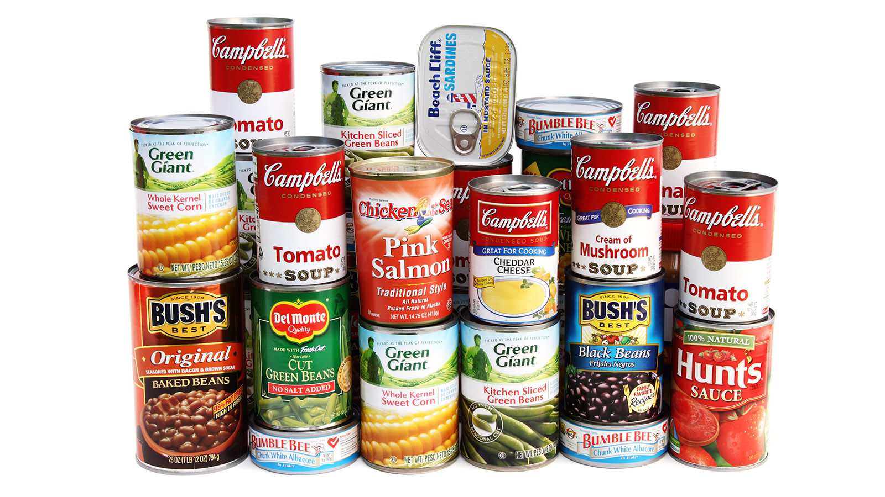

Methods Of Farm Produce Preservation
1. Sun Drying
This is one of the
oldest methods of
preservation. It involves spreading out the farm produce in the
sun to dry. It helps to get rid of most of the moisture in the
produce. It allows for air
circulation and it
helps all part of the farm produce to dry evenly.
Examples of farm produce that can be preserved by sun-drying are
tomatoes, pepper, cowpea, bitter leaf, melon, etc.
2. Smoking
It involves the spreading of processed meat or fish over a fire to be dried by hot smoke and heat of the fire. Catfish, pork meat and other animal produce are preserved using this method.

3. Salting
This is done by rubbing a good amount of salt on the food. Salt
helps to prevent the growth of bacteria by drawing out most of
moisture contained in the food that these bacteria need to
survive.
Examples of farm produce that can be
preserved by salting are; meat, fish and green beans.
4. Frying
In this method, food items are cooked in hot oil. Hot oil has a
higher temperature than hot water. The heat kills most of the
bacteria in food that causes spoilage.
Examples of
farm produce that can be preserved by frying are; meat, fish,
plantain and potato.

5. Refrigeration
Some farm produce can be preserved by keeping them cold in a
refrigerator.
Examples of farm produce that can be
preserved by refrigeration are; Fresh fruits, dairy products and
vegetables.
6. Freezing
Some farm produce can be preserved for a long time by keeping
them in a freezer. Keeping them in freezers ensures that the
moisture in them turns into ice, thus stopping bacterial action
completely.
Examples of such produce that can be
preserved are; meat and fish.

7. Canning
Some farm produce is preserved by cooking and sealing them in
germ-free cans or jars. The sealed cans or jars are then further
boiled to kill any remaining bacteria. Sometimes, additional
preservatives are added to the canned food to help preserve them
for a longer period. Food preserved by canning or bottling can
become spoilt if the can or bottle is left open for some time.
Examples of farm produce that can be preserved by
canning or bottling are; meat (corn beef), fish(sardine),
tomatoes, peas, milk, vegetable oil and fruits, etc.
8. Bottling
This method of preservation is commonly used for seeds and
grains. The grains are kept in small sacks to prevent
contamination and also to keep away pests that can destroy
grains.
Examples of farm produce that can be
preserved by bagging are; rice, beans, wheat, millet and
groundnut.